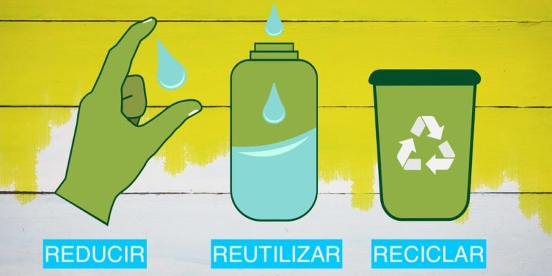
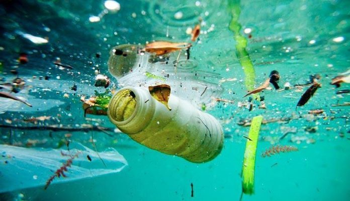

¿Que Significa?
Las tres erres (3R) es una regla para cuidar el medio ambiente, específicamente para reducir el volumen de residuos o basura generada. Las 3R te ayudan a tirar menos basura, ahorrar dinero y ser un consumidor más responsable, así reduciendo tu huella de carbono. Y lo mejor de todo es que es muy fácil de seguir, ya que sólo tiene tres pasos: reducir, reutilizar y reciclar.

